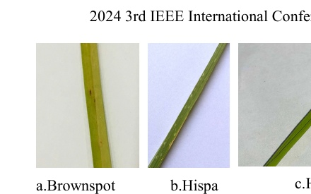
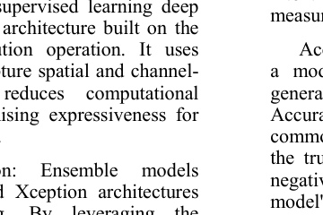
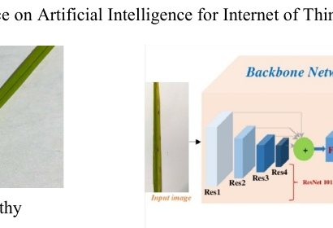
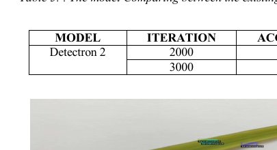
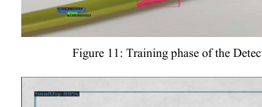
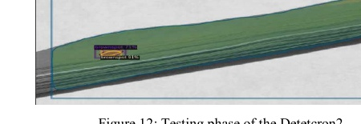

COMPUTER VISION · DEEP LEARNING · AGRICULTURE AI · IEEE AIIoT 2024
Paddy Leaf
Disease Detection
Deep-learning models for automated disease detection and classification in rice crops.
A computer-vision study benchmarking multiple deep-learning architectures and Detectron2 for automated paddy leaf disease recognition, with a focus on improving scalable and timely agricultural disease detection.
3,355Leaf Images
97%Detectron2 Accuracy
3,000Detectron2 Iterations
9+Deep-Learning Models Compared
IEEE 2024Published Research
01 · AGRICULTURAL CHALLENGE
Leaf disease can reduce crop quality before manual inspection catches it.
Rice leaf diseases threaten agricultural output, while manual diagnosis can be labor-intensive and subjective. The project investigates computer vision as a scalable method for recognizing disease patterns from leaf images.
disease region
leaf tissue
02 · DATASET
Learning from thousands of paddy leaf images.
The study used 3,355 images collected from web sources including Kaggle and Google Images. The paper describes healthy leaves alongside disease categories such as bacterial blight, brown spot, and leaf blast.
3,355Total images
Healthy + DiseasedClassification scope
AugmentationGeneralization strategy
COCO JSONDetectron2 annotation format

03 · MODEL BENCHMARKING
Multiple architectures were evaluated—not just one network.
The experiments compare conventional CNNs and transfer-learning architectures before evaluating Detectron2 as the primary detection framework.
VGG16
76%50 epochsMobileNetV2
91%50 epochsResNet50
50%50 epochsInceptionV3
80%50 epochsDenseNet121
92%50 epochsXception
92%50 epochsDenseNet + Xception
91%50 epochsEfficientNet B3
32%50 epochs
04 · DETECTRON2 PIPELINE
Detection moves beyond simple image classification.
Detectron2 uses a backbone network, feature pyramid, region proposal network, ROI heads, and detection / mask heads. The paper uses a Mask R-CNN configuration with a ResNet-101 backbone and Feature Pyramid Network.
INPUT IMAGE
→
BACKBONE
→
FPN
→
RPN
→
ROI / MASK

05 · RESULTS
Detectron2 reached 97% accuracy at 3,000 iterations.
The reported Detectron2 result improved from 90% at 2,000 iterations to 97% at 3,000 iterations, outperforming the other tested configurations reported in the study.
→



06 · END-TO-END RESEARCH WORKFLOW
From raw leaf images to evaluated disease predictions.
07 · WHY IT MATTERS
Computer vision can support faster crop-health decisions.
Automated disease recognition can reduce dependence on subjective manual inspection and provide a foundation for scalable agricultural monitoring and decision support.
✓ Earlier disease recognition
✓ Reduced manual inspection burden
✓ Scalable image-based screening
✓ Support for crop-health monitoring
✓ Transfer learning for limited datasets
✓ Foundation for API / web deployment
08 · LIMITATIONS & NEXT STEPS
Field deployment needs broader data and stronger robustness.
Image quality
The paper explicitly shows that prediction quality depends on how clear the image is.
Dataset scale
More diverse disease examples would improve generalization to harder field conditions.
Disease coverage
The authors identify adding more disease classes as a future direction.
Deployment
The conclusion proposes combining the workflow into an API or website for practical use.
09 · IEEE PUBLICATION
A Cutting Edge Deep Learning Models for Paddy Leaf Disease Detection and Classification
COMPUTER VISION · AGRICULTURE AI · DEEP LEARNING